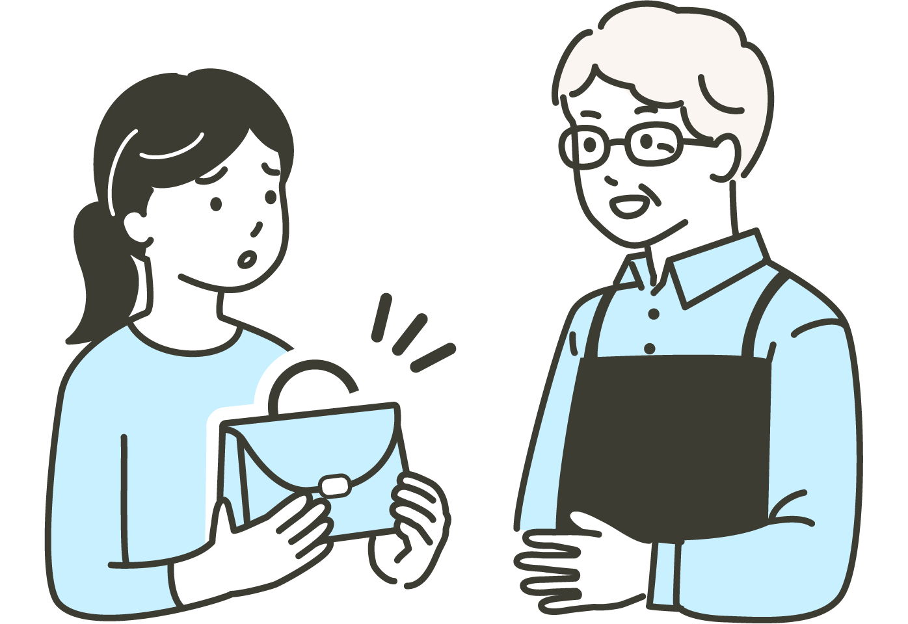
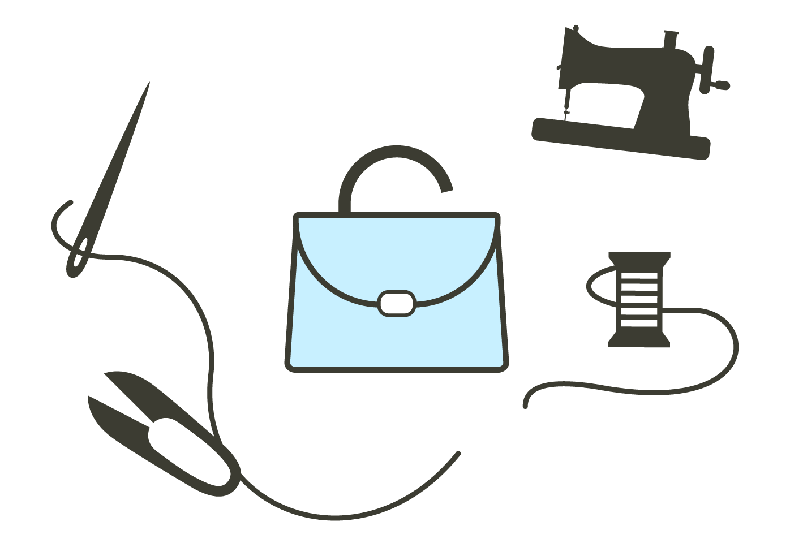
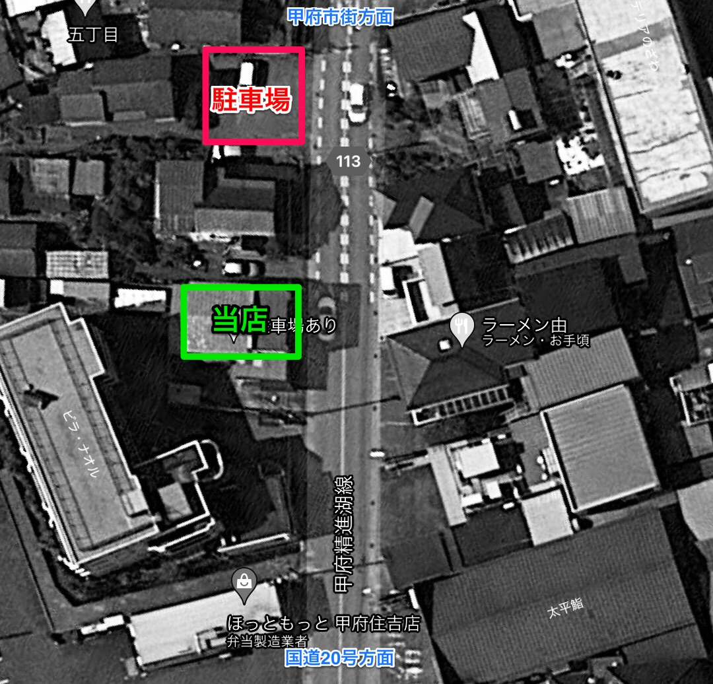

思い出の詰まった大切なカバン、これからも一緒に。
他店で断られてしまった修理でも、まずは波切カバン店へお任せを。
職人の確かな技術で、新品のように使いやすい状態へ丁寧にお直しします。
修理メニュー・料金
Menu修理の費用・所要日数はカバンの痛み具合や部位、修理の仕上げ方法によって異なりますが、
おおよそ下記の通りとなっております。
修理例
その他の修理例
カバンの種類
その他の種類
「これは直せるのかな？」と思ったら、まずはお電話でお問い合わせください。
修理の流れ
Flow-

1.確認、お見積もり修理品を当店までお持ちください。
修理が必要な箇所、不具合について確認させていただきます。 -
2.ご依頼の確定
修理品を確認後、概算の金額や仕上がりまでの時間をお伝えしますので、問題がなければ修理品を預からせていただきます。
ご予算に合わない場合や修理不能の場合は、修理を行いませんので代金は不要です。
ご依頼が確定した場合、修理完了のご連絡をさせていただくために、ご連絡先を伺います。 -

3.修理作業当方にて修理作業を行います。
※修理状況につきましては、いつでもお電話にてご確認いただけます。 -
4.修理完了
修理が完了しましたら、ご連絡させていただきます。
お品物と引き換えに修理の代金を頂戴します。
お客様の声
Voices長年愛用していたキャリーバッグの車輪がすり減ってしまい、真っ直ぐ進まなくなって困っていました。波切カバン店さんに相談したところ、迅速に新しいキャスターに交換していただき、新品のようにスムーズに動くようになりました。お気に入りのカバンだったので、また次の旅行に持っていけるのが嬉しいです。
毎日使っているビジネスバッグの持ち手がちぎれそうになっていました。他店では断られてしまったのですが、こちらでは丁寧に補強と交換をしていただき、まだまだ長く使えそうです。職人さんの確かな技術に感謝しています。修理の途中経過も電話で優しく教えていただき安心できました。
20年ほど使ってきた大切なブランドバッグの内張りがボロボロとはがれてしまい、見た目が気になって使うのをやめていました。波切カバン店さんにお願いしたところ、元の雰囲気を大切にしながら丁寧に張り替えていただき、また堂々と使えるようになりました。長く大切にしてきたカバンを直してもらえて、本当によかったです。
よくあるご質問
FAQ-
どんなものが直せますか？
カバン・バッグ類全般の修理に対応しています。ファスナー・チャックの交換、持ち手・肩ひもの修理・交換、キャスター（車輪）の交換、内張りの張り替え、錠前の交換、縫い直し・補強など、幅広くお受けしています。まずはお気軽にお電話にてご相談ください。
-
修理の期間はどのぐらいかかりますか？
修理の内容によって異なります。簡単なものであれば1週間程度、内張りの張り替えや複雑な作業の場合は2〜4週間程度が目安です。混み具合によっても変わりますので、詳しくはお電話にてご相談ください。
-
見積もりは無料ですか？
はい、お見積もりは無料です。修理品をお持ちいただければ、内容を確認した上で概算の金額と所要日数をお伝えします。お見積もりの内容にご納得いただけない場合、代金は一切かかりません。
-
他のお店で断られたのですが、修理を引き受けていただけますか？
他店で断られてご来店いただく方も多くいらっしゃいます。これまでの実績では、修理可能な場合が多くありました。まずはお電話またはご来店の上、ご相談ください。
-
ブランドバッグの修理もお願いできますか？
はい、ヴィトン・シャネル・グッチ・プラダ・エルメスなどのブランドバッグも対応しております。ただし、修理に使用する金具や部材は汎用品となりますので、ブランド純正品への交換はできかねる場合があります。詳しくはご相談ください。
-
大切なカバンなので、修理後の仕上がりが気になります
修理を行う前に、仕上がりについてのご要望をお気軽にお申し付けください。なるべくご希望に沿う形で修理いたします。また、修理が完成した際には引き渡し前にご確認いただくことも可能です。
店舗情報
Informationアクセス
〒400-0851
山梨県甲府市住吉5丁目18-25
県道精進湖線沿い、ほっともっと、ナオル薬局と同じ通りです。
駐車場のご案内

店舗の北の2軒隣りに駐車場があります。
業務内容
・かばんの修理
・学校かばんの製造・販売
・革製品の加工（携帯用ストラップの作成 / アクセサリ加工）
・特注かばんの製造（宝石ケース / 携帯ホルダー / ミニランドセル / その他オーダーメイド）